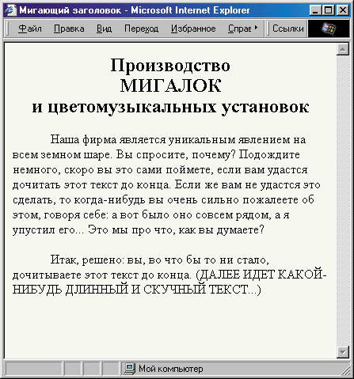
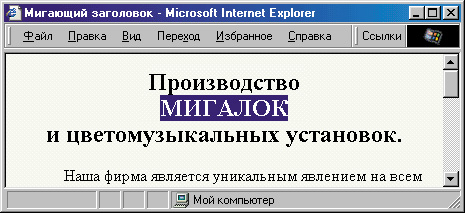

|
|
|
|
6.3. Динамическое изменение внешнего вида страницы
Чтобы динамически изменять вид нашей веб-страницы, необходимо решить один вопрос: каким образом наш сценарий сможет обращаться к отдельным ее элементам? Существует два способа такого доступа: классический и по имени элемента. Чтобы быть последовательными, давайте сначала рассмотрим первый из них.
Доступ к элементам HTML по номеру
Возьмем такой пример. Предположим, что мы поместили на веб-страницу графический элемент (картинку), но хотим, чтобы она не сразу возникла в своем реальном размере, а постепенно выросло “из ничего”. Для примера можно взять изображение компьютера ATARI-800, которое уже исполь- зовалось нами в главе 3. Карту графических ссылок мы в этом примере на него ставить не будем, хотя это легко сделать, просто перенеся код из последнего примера раздела 3.1'. Сначала просто поставим картинку на сграницу:
<IMG SRC="Images/computer.gif" WIDTH="151" HEIGHT="10" BORDER="0" АLТ="Компьютер">
Физический размер этой картинки — 451х310, но мы, как видите, специально уменьшили ее ширину и высоту на 300 пикселов. Теперь давайте попытаемся обратиться к ней из сценария JavaScript.
Оказывается, доступ ко всем картинкам на странице можно получить, просто написав метод document.images и указав в квадратных скобках номер картинки на странице. Вообще говоря, такой синтаксис в JavaScript употребляется по отношению к массивам элементов. То есть, если у нас есть массив из пяти элементов под названием MoyMassiv, то к его элементам следует обращаться так: MoyMassiv[0], MoyMassiv[1],..., MoyMassiv[4]-. Мас сив document.images называется коллекцией.
Нумерация картинок начинается с нуля. Наша картинка, как первая на странице, будет иметь номер 0. Следовательно, для обращения к ней из сценария следует использовать метод document.images[0]. Если бы мы поместили на страницу еще одну картинку, после первой, то к этой второй кар тинке мы могли бы обратиться так: document.images[1].
Теперь мы можем написать функцию, которая будет проверять, не достигла ли еще наша картинка нужного размера, и если нет, то увеличивать ее ширину и высоту. Проверить размеры можно следующим образом:
if (document.images[0].width<451)
То есть, если после номера картинки мы поставим точку и напишем любой имеющийся ее HTML-атрибут, то сможем из сценария узнать его значе ние и, при необходимости, изменить его:
document.images[0].width+=2;
В данном случае мы увеличили ширину картинки на 2 пиксела. Точно так же можно поступить и с ее высотой:
document.images[0].height+=2 ;
Теперь, чтобы “зациклить” нашу функцию, можно просто в конце выз вать ее же после некоторой задержки. Например, если наша функция будет называться sizer(), то последней ее строкой может быть:
setTimeout("sizer()", 20);
Такой вызов функции из самой себя называется рекурсивным вызовом и довольно часто употребляется в JavaScript. (Учтите, что так можно поступать далеко не во всех языках программирования — в некоторых языках из-за рекурсивных вызовов может случиться, например, ошибка переполнения стека, или еще какая-нибудь гадость... Но пока мы пишем код на JavaScript, об этом можно не беспокоиться.) Теперь достаточно один раз вызвать эту функцию, и далее она будет все время вызывать себя сама. Конечно, можно было сделать и как-нибудь по-другому, например оста вить в “теле” функции только само увеличение размера, а проверку и повторный вызов вынести в “тело” документа, написав там что-нибудь вроде:
while (document.images[0].width<451) setTimeout("sizer()", 20);
Однако для иллюстрации возможностей давайте все же применим рекурсивный вызов. Итак, посмотрим, что у нас получается.
<!DOCTYPE HTML PUBLIC "-//W3C//DTD HTML 4.0 Transitional//EN">
<HTML>
<HEAD>
<TITLE>Картинка с изменяющимся размером</ТIТLЕ>
<SCRIPT LANGUAGE""JavaScript">
function sizer () { if (document.images[0].width<451)
{ document.images[0].width+=2; document.images[0].height+=2; setTimeout("sizer()", 20); } } //--> </SCRIPT>
</HEAD>
<BODY>
<IMG SRC="Images/computer.gif" WIDTH="151" HEIGHT”"10" BORDER="0" АLТ="Компьютер">
<SCRIPT LANGUAGE="JavaScript">
sizer(); //-->
</SCRIPT>
</BODY>
</HTML>
В результате мы получим картинку, постепенно увеличивающуюся в размерах. Кстати, некоторые компьютеры могут “не успевать” так часто перерисовывать изображение, особенно если на странице есть еще какая-нибудь информация, поэтому можно в расчете на них увеличить время задержки перед следующим вызовом функции. При этом лучше во столько же раз увеличить и приращение размеров картинки, иначе она будет расти чересчур медленно, и надоест пользователю еще до того, как приобретет свои истинные размеры. Например, это можно сделать так:
document.images[0] width+=10;
document.images[0].height+=10;
setTimeout("sizer()", 100);
При этом, разумеется, увеличение будет происходить не так плавно, зато мы можем быть уверены, что на большинстве компьютеров такая “анимация” будет воспроизведена корректно.
Кстати, нашу функцию sizer() легко переделать так, чтобы картинка, достигнув нормальных размеров, снова начала уменьшаться, затем опять увеличилась и так далее. Для этого надо прибавлять к размерам не просто число, а переменную:
document.images[0].width+=a; document.images[0],height+=a;
Тогда мы сможем присваивать этой переменной то положительное, то отрицательное значение, например, +2 и -2. Пусть изначально значение будет положительным:
var а=2 ;
причем это определение переменной не должно происходить внутри “тела” функции. Теперь, если картинка достигла нормальных размеров, изменим значение а на -2:
if (document.images[0].width>=451) a=-2;
Картинка начнет уменьшаться. Осталось при слишком маленьком ее раз-мере снова изменить значение а:
if (document.images[0].width<=151) a=2;
Посмотрим, как теперь будет выглядеть функция целиком (все остальное на этой странице остается таким же, как в предыдущем примере, поэтому мы не будем повторять текст всей страницы):
<SCRIPT LANGUAGE="JavaScript">
<!-- var a=2; function sizer()
( if (document.images[0].width>=451) a=-2;
if (document.images[0],width<=151) a=2;
document.images[0].width+=a;
document.images[0].height+=a;
setTimeout("sizer0", 20); }
//-->
</SCRIPT>
Итак, мы рассмотрели, каким образом можно получить доступ из сценария к любой картинке на веб-странице. Таким же способом можно управлять еще некоторыми элементами: ссылками и элементами тега <AREA> через метод document.links, формами через метод document.forms и document.forms[номep_формы].elements, якорями через метод document.anchors и т.д.
Доступ к элементам HTML по имени
Однако, во-первых, не очень удобно высчитывать номер элемента на стра- нице, а во-вторых, описанным выше способом мы можем получить дос- туп не ко всем элементам. Рассмотрим такой пример. Предположим, мы создаем веб-страницу для сайта фирмы, производящей мигалки, и поэтому нам обязательно хочется, чтобы в заголовке соответствующее слово мигало. Мы даже уже написали заготовку:
<!DOCTYPE HTML PUBLIC "-//W3C//DTD HTML 4.0 Transitional//EN">
<HTML>
<HEAD>
<ТITLЕ>Мигающий зaгoлoвок</TITLE>
<STYLE> BODY { background-color: #F9FFF9;
color: #OD160E; } H2 {
text-align: center; } P { text-indent: 3em;
} </STYLE>
</HEAD>
<BODY>
<Н2>Производство <ВR>МИГАЛОК<ВR> и цветомузыкальных установок </Н2>
<Р>Наша фирма является уникальным явлением на всем земном шаре. Вы спросите, почему? Подождите немного, скоро вы это сами поймете, если вам удастся дочитать этот текст до конца. Если же вам не удастся это сделать, то когда-нибудь вы очень сильно пожалеете об этом, говоря себе: а вот было оно совсем рядом, а я упустил его... Это мы про что, как вы думаете?</Р>
<Р>Итак, решено: вы, во что бы то ни стало, дочитываете этот текст до конца. (ДАЛЕЕ ИДЕТ КАКОЙ-НИБУДЬ ДЛИННЫЙ И СКУЧНЫЙ ТЕКСТ...)</Р>
</BODY>
</HTML>
Результат работы этой заготовки показан на рис. 6.6. Итак, проблема в том, чтобы заставить мигать слово “МИГАЛОК”. Ну, разумеется, можно применить стилевое свойство text-decoration: blink; или просто тег <BLINK> , но ни то, ни другое не поддерживается броузером Internet Explorer. Как же быть?
Прежде всего, надо выделить слово МИГАЛОК в отдельный элемент. Поскольку оно находится на отдельной строке, можно использовать тег <DIV>:
<Н2>Производство <DIV>МИГАЛOK</DIV> и цветомузыкальных установок.</Н2>
Чтобы иметь возможность управлять этим элементом, нужно дать ему уникальное имя, установив атрибут ID=:
<Н2>Производство <DIV ID="mig">МИГАЛOK</DIV> и цветомузыкальных установок.</Н2>
Теперь, если у пользователя броузер Netscape, можно сразу установит! мигающий стиль:
<Н2>Производство <DIV ID="mig" STYLE="text-decoration: blink;>МИГАЛOK</DIV> и цветомузыкальных установок.</Н2>

Рис. 6.6. Предварительная заготовка для веб-страницы с мигающим заголовком
Изменение свойств элементов
Поскольку Internet Explorer при этом не отобразит мигание, мы можем напи сать функцию, которая будет делать этот элемент то видимым, то невиди мым. Для этого нам пригодится стилевое свойство visibility. Сначала установим его так, чтобы элемент был виден:
<Н2>Производство <DIV ID="mig" STYLE="text-decoration: blink; visibility: visible;">МИГАЛОК</DIV> и цветомузыкальных установок.</Н2>
После этого остается проверить тип броузера, и если это не Netscape, вызвать функцию искусственного мигания (которую мы еще не написали):
if (navigator.appName!""Netscape") blink it();
Обратите внимание на то, что символ != означает неравно. Итак, эта функция должна то прятать наш элемент, то наоборот, показывать. Чтобы сдедать элемент невидимым, нужно присвоить его свойству visibility значение hidden. Поскольку мы дали элементу уникальное имя (с помощью атрибута ID=), теперь у нас есть возможность получить доступ к нему через коллекцию document.all:
document.all.mig.style.visibility="hidden";
Как видите, написав метод document.all, можно после точки просто указать имя элемента и далее любой атрибут, в данном случае STYLE=. После style можно снова поставить точку и указать любое стилевое свойство.
Чтобы сделать наше слово опять видимым, нужно присвоить свойству visibility значение visible:
document.all.mig.style.visibility="visible";
Теперь осталось только написать условие. Можно было бы просто написать:
if (document.all.mig.style.visibility="hidden") document.all.mig.style.visibility="visible";
else document.all.mig.style.visibility="hidden";
Однако давайте для большей гибкости и наглядности используем переменную флаг. Пусть она будет равна 1, если элемент видимый, и 0, если нет. Тогда мы можем в условии проверять именно этот флаг. Вся функция приобретет такой вид:
<SCRIPT LANGUAGE="JavaScript">
<!-- var vis=0; function blink it() { if (vis=l)
{ document.all.mig.style.visibility="hidden";
vis=0; } else { document.all.mig.style.visibility="visible"; vis=1;
} setTimeout ("blink_it()", 400); }
//--> </SCRIPT>
Как видите, изначально мы присвоили переменной-флагу vis значение 0, чтобы в первый же момент надпись МИГАЛОК не исчезала (при первом запуске функции теперь элемент будет видим). В конце функции мы используем задержку в 400 миллисекунд и рекурсивный вызов той же функции.
Давайте посмотрим, как будет выглядеть вся страница.
<BODY>
<Н2>Производство <DIV ID="mig" STYLE="text-decoration: blink;
visibility: visible;
">МИГАЛОК</DIV> и цветомузыкальных установок.</Н2>
<Р>Наша фирма является уникальным явлением на всем земном шаре. Вы спросите, почему? Подождите немного,скоро вы это сами поймете, если вам удастся дочитать этот текст
до конца. Если же вам не удастся это сделать, то когда-нибудь вы очень сильно пожалеете об этом, говоря себе: а вот было оно совсем рядом, а я упустил его... Это мы про что, как вы думаете?</Р>
<Р>Итак, решено: вы, во что бы то ни стало, дочитываете этот текст до конца. (ДАЛЕЕ ИДЕТ КАКОЙ-НИБУДЬ ДЛИННЫЙ И СКУЧНЫЙ ТЕКСТ...)</Р>
<SCRIPT LANGUAGE="JavaScript">
if (navigator.appName! ""Netscape") blink it(); //--> </SCRIPT> </BODY> </HTML>
Выбор изменяемых свойств
Кстати, использование переменной-флага дает нам возможность легко переделать это мигание во что-нибудь другое. Например, вместо временного исчезновения надписи можно на это время включать выворотку, то есть взаимно поменять цвет текста и цвет фона. Как мы уже говорили, получив доступ к элементу (например, через метод document.all), мы можем легко изменить любое его свойство. Вот, например, как можно организовать мигание с вывороткой:
function blink it() { if (vis"1) { document.all.mig.style.backgroundColor="#OD160E document.all.mig.style.color="#F9FFF9"; vis=0;
} else { document.all.mig.style.backgroundColor="#F9FFF9" ;
document.all.mig.style.color="#OD160E"; vis=l; } setTimeout ("blink_it()", 400); }
Результат (в момент включения выворотки) показан на рис. 6.7. Обратите внимание на то, что стилевые свойства, которые пишутся через дефис в нашем примере это background-color), при доступе из сценария необходимо писать без дефиса, но заменив букву, идущую после дефиса, на прописную. Так, background-color превращается в backgroundColor, font-size в fontSize, border-style в borderStyle и т. д. Кстати говоря, чтобы получить тот результат, который показан на рис. 6.10, нам пришлось добавить еще одно свойство нашему мигающему элементу:
<Н2>Производство <DIV ID="mig" STYLE="text-decoration: blink; width: 7em; visibility: visible;">МИГАЛОК</DIV> и цветомузыкальных установок.</Н2>
а именно: мы установили ширину элемента. Если этого не сделать, цвет фона будет меняться на этой строке по всей ширине экрана.

Рис. 6.7. Мигание заголовка может осуществляться разными способами, в том числе и вывороткой
Доступ к элементам страницы через метод document.all — вещь очень удобная. К сожалению, такая возможность на 100% поддерживается только в броузере Internet Explorer. Что касается броузеров Netscape, то доступ к любому элементу там появился только в шестой версии, но синтаксис его отличается от рассмотренного выше. Вместо documental).имя_элемента для Netscape 6 нужно писать document.getElementByld("имя_элементa"). А в более ранних версиях Netscape доступ обеспечивается только к некоторым элементам страницы: рисункам (document.images), ссылкам (document.links), якорям (document.anchors), элементам управления и внедренным объектам (document.applets), формам (document.forms), объектам, внедренным с помощью тега <EMBED> (document.embeds), а также слоям, которые в Netscape организовывались с помощью тега <LAYER> (через document, layers). При этом, правда, все равно можно присваивать этим элементам уникальные имена и затем использовать их для обращений, например, так:
<A NAME="colored">Какой-то текст<А> <SCRIPT> document.anchors.colored.style.color="red"; </SCRIPT>
При этом некоторые версии Netscape позволяют опустить слово style, а при доступе к слоям — и слово layers.
Эти отличия несколько затрудняют создание страниц, которые бы хорошо смотрелись и в Internet Explorer, и в Netscape. Однако всегда можно проверить из сценария тип и версию броузера, после чего написать различные блоки кода для разных броузеров. В некоторых особо сложных случаях можно даже написать отдельные страницы для разных типов броузеров, и организовать перенаправление на них (пример такого перенаправления был приведен в разделе 6.1). В любом случае не забывайте проверять, как веб-страница смотрится в броузерах других типов. Сложно, конечно, поддерживать совместимость со всеми броузерами, но даже если ориентироваться на какой-нибудь один из них, все равно иногда стоит немного подкорректировать код так, чтобы пользователи других броузеров увидели хоть что-то более или менее похожее. Кстати, в этой книге большинство примеров ориентированы на броузер Internet Explorer версии 4 и выше.
|
|
|
|